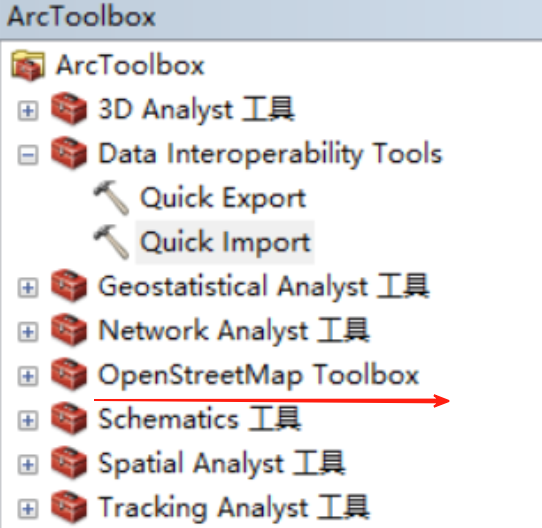
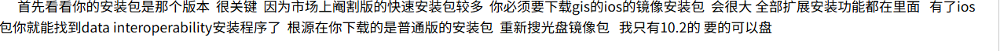
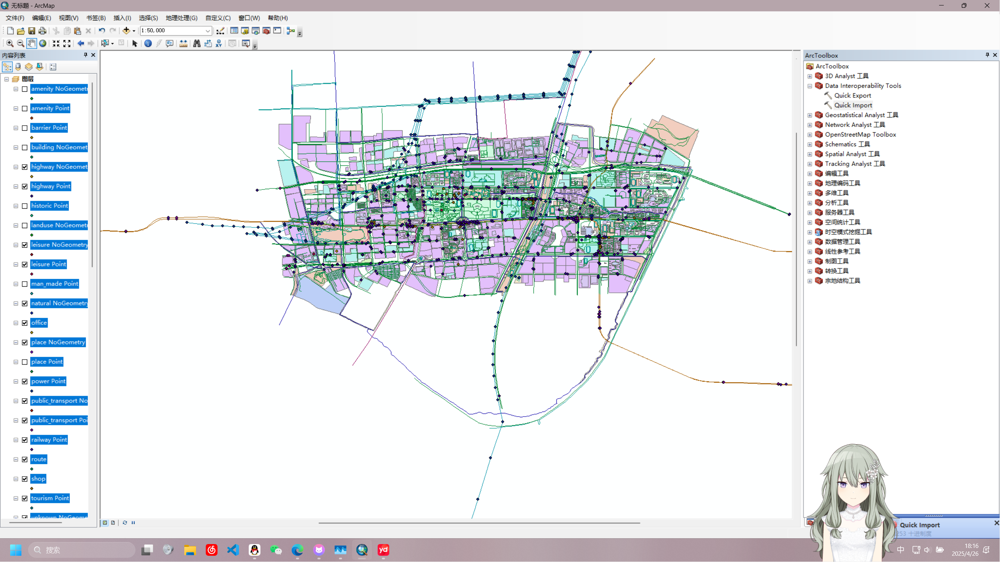

ArcGIS补充
ArcGIS 10.8 OSM 数据处理补充
在使用 OSM 数据遇到的困难，比如 OpenStreetMap Toolboxs 和 Data Interoperability Tools 的安装 点击此处直达第三章安装过程
为什么要安装这些工具
OpenStreetMap Toolboxs
OpenStreetMap Toolboxs 通常指一系列用于处理、分析或编辑OSM数据的工具或软件集合，其核心功能围绕地理数据的获取、处理和应用展开。以下是其典型功能的概括：
-
数据获取与导出
支持从OSM平台下载特定区域的原始数据（如.osm、.pbf格式），或通过API提取要素（如道路、建筑物），也可导出为GIS兼容格式（如Shapefile、GeoJSON）。 -
数据编辑与贡献
提供可视化编辑器（如JOSM、iD编辑器）用于修改地图数据（添加/修正道路、POI等），支持离线编辑及变更集提交，便于用户协作更新OSM数据库。 -
数据转换与处理
将OSM数据转换为其他空间数据格式，或进行筛选（如按标签提取特定要素）、拓扑修复（如路网连通性检查）、坐标转换等预处理。 -
分析与可视化
支持空间分析（如路网密度计算、可达性分析）及自定义地图渲染（通过样式配置生成专题地图），部分工具集成QGIS或PostGIS进行高级操作。 -
路由与导航
基于OSM数据生成路径规划（如汽车、步行、骑行），本地化工具（如OSRM、GraphHopper）可部署离线导航服务。 -
数据质量检查
自动化检测数据问题（如重叠几何、标签缺失），辅助验证贡献内容的合规性，确保数据一致性。 -
3D/高程集成
结合地形数据（如SRTM）生成3D模型或坡度分析，扩展OSM的立体应用场景。 -
自定义工作流
通过脚本（Python库如osmnx）或命令行工具（如osm2pgsql）构建自动化流程，适应批量处理或研究需求。
这些功能多通过独立工具（如Overpass Turbo查询数据）或集成套件（如OSMAnd的移动应用）实现，侧重开放性与灵活性，适合从普通用户到开发者的不同需求。
Data Interoperability Tools
Data Interoperability Tools 主要用于在不同地理空间数据格式、标准或平台之间进行无缝转换、集成和处理，确保数据在不同系统或应用中的兼容性和高效利用。其核心功能包括：
-
多格式转换
- 支持多种GIS数据格式的相互转换（如Shapefile ↔ GeoJSON, KML ↔ OSM, CSV ↔ PostGIS）。
- 处理行业标准格式（如GML, DWG, DGN）与开放格式（如OSM, GeoPackage）的兼容性。
-
数据集成与融合
- 合并不同来源的数据（如卫星影像+OSM路网），解决坐标系、属性表或拓扑结构的差异。
- 支持实时数据链接（如WMS/WFS服务）与本地数据的混合调用。
-
语义映射与标准化
- 自动或手动匹配不同数据模型的字段（如将OSM的
highway=primary转为ArcGIS的RoadClass=1）。 - 符合国际标准（如ISO 191xx, INSPIRE）或自定义规范的数据模型转换。
- 自动或手动匹配不同数据模型的字段（如将OSM的
-
拓扑与质量控制
- 在转换过程中修复几何错误（如重叠多边形、悬挂节点）。
- 验证数据完整性（如属性缺失检查、几何有效性）。
-
跨平台与云支持
- 与GIS软件（如QGIS, ArcGIS, FME）或数据库（PostGIS, SpatiaLite）集成。
- 支持云存储（如AWS S3, Google Cloud）和分布式处理（如GeoSpark）。
-
自动化与脚本扩展
- 通过Python、SQL或专用脚本（如FME Workbench）实现批量处理。
- 提供API或插件架构（如GDAL/OGR命令行工具）嵌入自定义工作流。
以上介绍由 AI 生成但基本准确
工具的安装
OSM安装
OSM 工具通常需要 ERSI 公司的官网进行下载。
-
这是一篇介绍不同版本的工具包下载的 博客 ，里面详细介绍了该工具的下载安装方式，注意安装前关闭所有
ArcGIS 相关软件，使用管理员方式安装对应版本。 -
这里给出10.8版本的工具包直达 链接
-
成功安装后在工具窗口会出现如下图：

Data Interoperability Tools 安装
-
作者在实际操作中发现自己的该工具缺失，查询后得知高版本的 ArcGIS（如 10.8）需要手动安装，官网需要正版账户才可安装。
-
可以先按照下图方式检查
 -
通常情况下市面的“学习版”都是阉割版本，于是作者搜集了 ArcGIS 10.8 版本的 Data Interoperability Tools 这里给出网盘链接
提取码:pkf3 -
安装注意事项同上，该工具的压缩包解压后仅需使用
Setup.exe文件即可，另一个文件夹不影响安装过程。 -
两个工具都完成（可能一个也可，未作尝试）后即可正常添加
.osm等文件。如下图